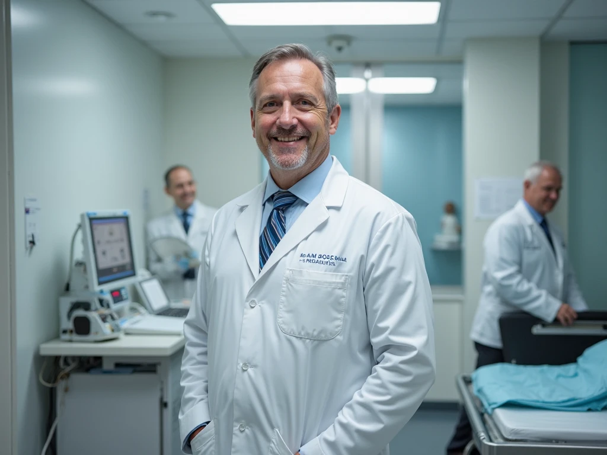

+380(97) 369 76 65
+380(97) 369 76 65Швидко позбутися похмілля
UmbrellaPlus Алкоголізм
Працюємо в Одесі, Києві, Львові, Харкові, Дніпрі, Запоріжжі, Чорноморську


Безкоштовна консультація, працюємо цілодобово 24/7
UmbrellaPlus Алкоголізм
Працюємо в Одесі, Києві, Львові, Харкові, Дніпрі, Запоріжжі, Чорноморську
Похмілля – це не просто дискомфорт, а комплексний стан, спричинений інтоксикацією організму продуктами розпаду алкоголю, зневодненням і порушенням обміну речовин. Головний біль, нудота, блювання, запаморочення, м’язовий біль, підвищена чутливість до світла і звуку, дратівливість, тривога, почуття провини – ці симптоми знайомі кожному, хто хоч раз перебрав з алкоголем. У медичній службі UmbrellaPlus ми усвідомлюємо, наскільки важливо швидко позбутися похмілля і повернутися до нормального, продуктивного життя. Ми пропонуємо сучасні, науково обґрунтовані підходи до детоксикації та відновлення організму, щоб ви могли забути про страждання і знову відчути себе у формі.
Коли настає ранок, а разом із ним і похмілля, багато хто хапається за народні засоби: розсіл, кефір, міцний чай. Ці методи можуть дати тимчасове полегшення, але рідко вирішують проблему кардинально. Похмілля – це складний процес, що потребує комплексного впливу. Для того, щоб відійти від похмілля максимально швидко й безболісно, необхідна професійна допомога. В UmbrellaPlus ми практикуємо індивідуальний підхід до кожного пацієнта. Наші лікарі-наркологи та анестезіологи-реаніматологи проводять ретельний огляд, оцінюють ступінь інтоксикації, наявність супутніх захворювань і загальний стан організму. На основі цієї інформації розробляється персоналізований план лікування, який може включати:
Наші спеціалісти готові оперативно виїхати до вас додому по Києву та Київській області, забезпечуючи максимальний комфорт та анонімність, або прийняти вас у клініці. Мета – не просто зняти симптоми, а допомогти організму повноцінно відновитися.
Одним із найшвидших і високоефективних способів швидко позбутися похмілля є інфузійна терапія, або очищувальна крапельниця від алкоголю. Це не просто «укол для бадьорості», а ретельно збалансований комплекс препаратів, які миттєво потрапляють у кров, минаючи травну систему, що забезпечує їх максимальну біодоступність і швидку дію.
Після введення крапельниці більшість пацієнтів відчувають значне полегшення вже протягом 30–60 хвилин. Повне відновлення зазвичай настає через кілька годин, повертаючи людині працездатність і гарне самопочуття.
Ситуація із запоєм набагато серйозніша, ніж звичайне похмілля. Запій – це стан безперервного вживання алкоголю протягом кількох днів і більше, що супроводжується вираженою інтоксикацією і тяжким абстинентним синдромом при спробі припинити пити. Спроби самостійно перервати запій, покладаючись виключно на таблетки без медичного контролю, вкрай небезпечні та можуть призвести до серйозних ускладнень: алкогольного делірію («білої гарячки»), судомних нападів, інфаркту, інсульту, шлунково-кишкових кровотеч і навіть летального результату. В UmbrellaPlus ми наполегливо рекомендуємо проводити вихід із запою лише під наглядом кваліфікованих наркологів. Наші лікарі використовують комплексну медикаментозну терапію, яка підбирається індивідуально для кожного пацієнта з урахуванням його стану, тривалості запою, віку і супутніх захворювань. В арсеналі наших спеціалістів:
Пам’ятайте, що самолікування при запої – це лотерея зі смертельним результатом. Довірте своє здоров’я професіоналам.
Якщо ви або ваш близький зіткнулися з проблемою запою – не гайте часу. Медична служба UmbrellaPlus надає послугу виведення із запою Київ і по всій Київській області, забезпечуючи оперативну і кваліфіковану допомогу. Ми розуміємо делікатність ситуації, тому гарантуємо повну анонімність і конфіденційність на всіх етапах лікування. Наші переваги, що роблять нас надійним партнером у боротьбі із запоєм:
Вартість виведення з похмілля в Києві починається від 2200 грн.
| Самые Популярные Услуги Львов | UmbrellaPlus | Цена |
|---|---|
| Вывод из запоя | От 1999 грн |
| Вывод из запоя на дому | От 1999 грн |
| Капельница от похмелья | От 1999 грн |
| Капельница от похмелья на дому | От 1999 грн |
Похмілля та запій – це лише вершина айсберга, що сигналізує про глибшу та серйознішу проблему: алкогольну залежність. Якщо ви усвідомили, що разових детоксикацій недостатньо і вам потрібна всебічна допомога у боротьбі з алкоголізмом, наша наркологічна клініка в Києві пропонує комплексний та ефективний підхід до лікування. В UmbrellaPlus ми створили умови для повного циклу відновлення, який включає:
Ми віримо, що кожна людина, яка зіткнулася з алкогольною залежністю, заслуговує на другий шанс на здорове, тверезе та повноцінне життя. В UmbrellaPlus ми забезпечуємо не лише лікування, але й всебічну підтримку на шляху до одужання.
Не дозволяйте похміллю або залежності зруйнувати ваше життя! Якщо вам потрібна кваліфікована допомога – від швидкої детоксикації до комплексного лікування алкоголізму – звертайтесь до медичної служби UmbrellaPlus.
Ваш шлях до здоров’я та тверезості починається з одного дзвінка. Телефонуйте нам прямо зараз: 050-021-69-57. Ми працюємо цілодобово та готові прийти на допомогу в будь-який момент. Довірте своє здоров’я професіоналам!
Анонимно

"Дуже довго не міг самостійно позбавитися залежності, тому зважився на підшивку. Процедура пройшла успішно, і з того часу я навіть не думаю про спиртне. Страх перед можливими наслідками допомагає триматися на плаву, а підтримка фахівців – величезна підмога у цьому нелегкому шляху. Центр надає як фізичну, а й моральну допомогу. Вдячний їм за другий шанс."
Анонимно
"Решила сделать укол от алкоголизма по рекомендации подруги, которая проходила эту процедуру в этом же центре. Я сомневалась, но врачи всё объяснили, успокоили. После укола не чувствую тяги к алкоголю, хотя раньше сложно было представить день без выпивки. Сейчас наслаждаюсь трезвостью, чувствую себя намного лучше."
Анонимно
"Я никогда не думал, что психологическое воздействие может настолько сильно повлиять на мою жизнь. Врач помог осознать всю серьезность ситуации, и теперь алкоголь не вызывает у меня никакого интереса. Процедура безопасна и эффективна, рекомендую тем, кто хочет по-настоящему изменить свою жизнь."
Анонимно
"Я прошла кодирование гипнозом, и это было удивительное переживание. Во время сеанса я почувствовала глубокое расслабление, а потом – будто внутри что-то изменилось. Сейчас я свободна от алкоголя и наслаждаюсь этим состоянием. Благодарю центр за профессионализм и заботу! Отдельная благодарность Станиславу Вячеславовичу"
Анонимно
"Чесно кажучи, боявся рецидиву, але з процедури минуло півроку, і я навіть не думаю про випивку. Життя почало змінюватися на краще. Дякуємо лікарям за підтримку та мотивацію!"
Анонимно
"Після багаторічної боротьби із залежністю вирішила звернутись в клінку. Спочатку переживала, але лікарі дуже докладно розповіли про процес та можливі наслідки. Зараз я не п'ю вже 8 місяців і почуваюся чудово. Я така щаслива, що знайшла цей центр і знайшла контроль над своїм життям."
Анонимно
"Метод Долженко казался мне странным, но я решил попробовать. Оказалось, что это не просто кодировка, а глубокая работа с психикой. Это позволило мне кардинально изменить отношение к алкоголю. Уже год я не пью, и не планирую возвращаться к прежней жизни. Простое человеческое спасибо!"
Анонимно
"Гипноз помог мне избавиться от постоянной тяги к алкоголю. После сеансов я заметила, что стала спокойнее и увереннее в себе. Теперь алкоголь меня больше не интересует. Центр мне очень помог, и я благодарна за их заботу и поддержку."
Приїзд протягом 60 хвилин від моменту надходження заявки
Наші філії є у всіх великих містах України.
Ми надаємо професійну доказову медичну допомогу. Гарантією є наше ім'я.
Номер телефону:
+380 (97) 369 76 65
+380 (50) 021 69 57
Адреса головного офісу: м. Харків вул. Сумська 47
Офіс вашого міста
потрібно уточнити
Працюємо у: Одесі, Києві, Львові, Харкові, Дніпрі,
Запоріжжя
Telegram: t.me/umbrellaplus
Графік роботи: Цілодобово